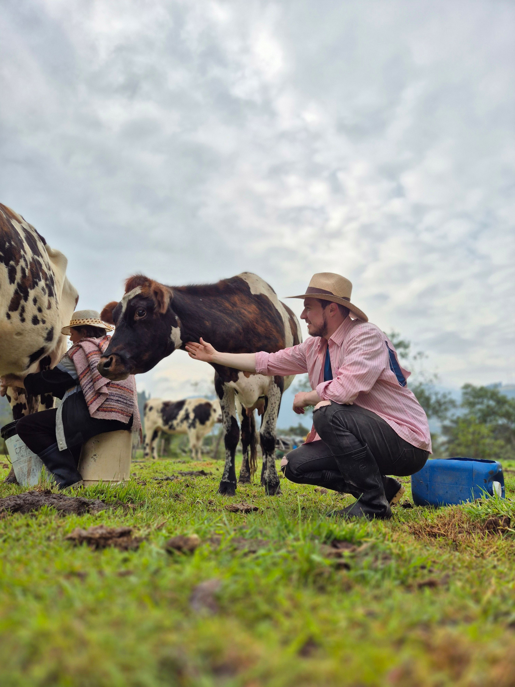

- 🐄 Ver misión

En Toro Forrajero creemos que adquirir productos de calidad para el cuidado y alimentación de los animales de granja debe ser un proceso sencillo y accesible para todos, sin importar su ubicación.
Conocemos los desafíos que enfrentan pequeños productores, ranchos y negocios al buscar tiendas especializadas, ya sea por la distancia, la disponibilidad de productos o las limitaciones de horario.
A través de nuestra plataforma de comercio electrónico, trabajamos para acercar las mejores opciones del mercado a quienes impulsan el desarrollo del campo, apoyando a pequeños productores y emprendedores con un catálogo especializado, compras rápidas y soluciones de entrega confiables.
